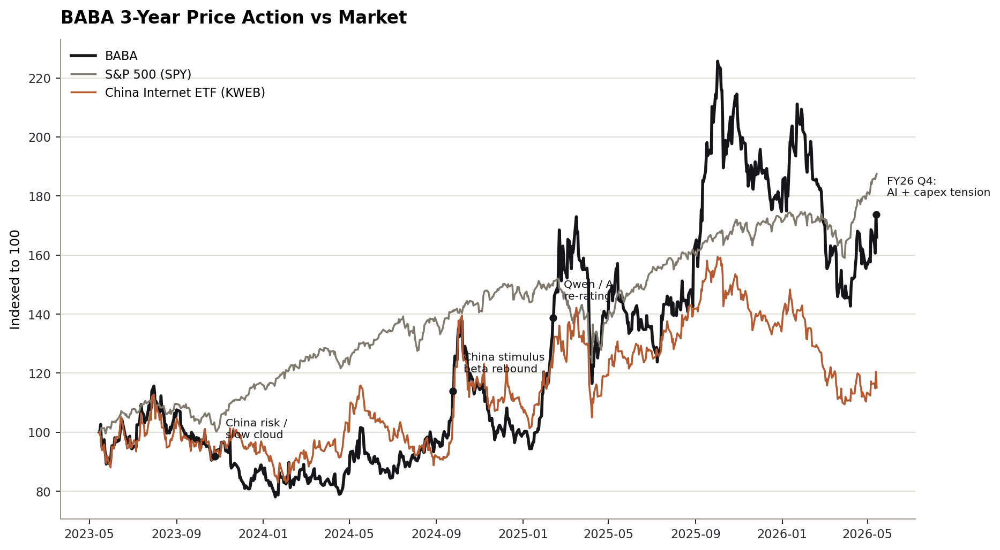
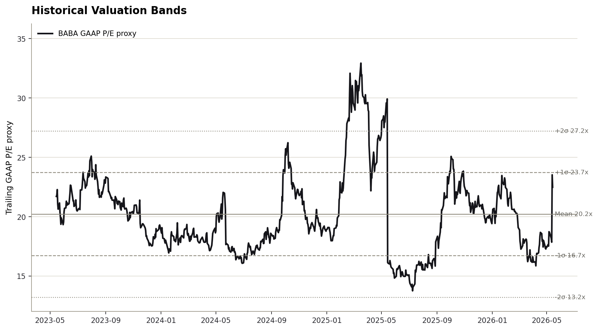
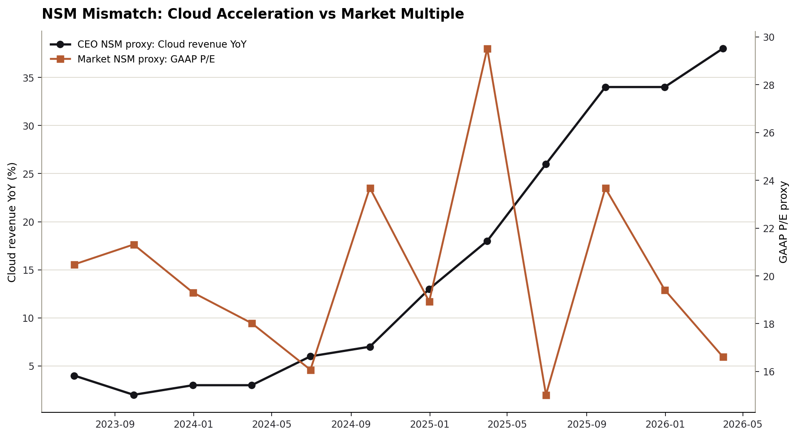

Ticker: BABA / 9988.HK
Date: 2026-05-14
Classification: Advance to next-stage research
结论：推进到下一阶段研究，但不是因为“便宜中国互联网”这个旧框架。 阿里巴巴现在的可研究点在于一个真实的计分牌迁移：市场仍在用集团利润、CMR表观增速和中国资产折价约束估值，而公司正在把价值创造重心转向 AI + Cloud 外部收入、Qwen/通义生态带来的 token 消耗、以及淘宝/天猫/即时零售整合后的消费入口。
这不是无风险的重估故事。FY2026 Q4 调整后 EBITA 同比下降 84%，全年自由现金流转为 RMB 466.09 亿流出，说明 AI 基建和快速商务投入已经真实压低当期财务。错配成立的前提是：云外部收入高增长不是一次性供给周期，CMR 的口径扰动可以被核心电商 EBITA 和真实 take-rate 解释，资本回报仍能约束管理层资本配置。
| Item | Latest Situation |
|---|---|
| Market Data & Positioning | BABA 最新价格约 $139.3，52 周区间 $103.7-$192.7，市值约 $334.1B。以公司披露现金及其他流动投资 US$75.5B、供应商债务口径不同计算，EV 应被视为约 US$300B 量级而非一个精确点数。 |
| Key Financial Metrics | FY2026 Q4 收入 RMB 2433.8 亿，同比增长 3%；云智能收入 RMB 416.3 亿，同比增长 38%；云外部收入增长 40%，AI 相关产品占云外部收入 30%；调整后 EBITA RMB 51.0 亿，同比下降 84%。 |
| Price Action & Technicals | 30 日技术层从 4 月初的弱势修复到 5 月中旬的高波动上行：最新收盘约 $140.1，高于 12/26/50 日 EMA，MACD 为正，RSI 约 55，但 5 月 13 日放量冲高后回落，短线不是低风险买点。 |
| Positioning | 卖方最新可得目标价集中在 US$180-237，评级多为 Buy/Overweight。市场分歧不是“公司是否有资产”，而是云 AI 该不该给独立倍数、以及快速商务/AI 投入是否会吞噬电商现金流。 |
| Key Metric | Value | Implication |
|---|---|---|
| 云外部收入增速 | 40% | 这是市场验证 AI 叙事是否进报表的第一指标；若持续，SOTP 云倍数有上修空间。 |
| AI产品占云外部收入 | 30% | 说明 AI 不是纯内部成本中心，但还需要跟踪毛利、折旧和客户续费。 |
| FY2026 FCF | -RMB 46.6B | 最大反证点：增长正变成重资本开支周期，传统 FCF per share 框架短期失灵。 |
| FY2026 分红 | US$1.05/ADS | 现金回报仍在，但相比 AI/即时零售投入规模，分红只能提供估值底部，不足以单独构成 thesis。 |
Pricing Anchor & Embedded Expectations: 当前最合理的市场锚是“核心电商 P/E + 云 P/S 的 SOTP 折价”。JPM 用 16x FY28E P/E 得到 Dec-26 目标价 US$200；Citi 用 FY27E 电商净利 10x P/E、云收入 6.5x P/S、AIDC 2.0x P/S，并对净现金打 30% 折价；Bernstein 将云外部收入倍数从 5x 上调至 8x。换句话说，卖方已开始换尺子，但市场价格仍没有完全承认云 AI 的独立价值。
Peer Benchmarking: 公开市场快照显示，BABA forward P/E 约 14.8x，低于 Amazon，但与 PDD/JD 的低倍数中国互联网框架仍相邻。若阿里云能被视为中国 AI full-stack 稀缺资产，当前集团倍数低估了可选性；若云只是高 capex、低利润率的再投资周期，则折价合理。
| Company | Market Cap | Forward P/E | P/S | Revenue Growth | Net Margin |
|---|---|---|---|---|---|
| Alibaba | $334.1B | 14.8x | 0.3x | 2.9% | 10.1% |
| PDD | $136.6B | 6.8x | 0.3x | 12.0% | 22.7% |
| JD.com | $44.7B | 7.7x | 0.0x | 4.9% | 1.0% |
| Tencent | $533.8B | 11.7x | 0.7x | 9.1% | 30.6% |
| Amazon | $2.89T | 27.2x | 3.9x | 16.6% | 12.2% |
| MercadoLibre | $78.9B | 25.6x | 2.5x | 49.0% | 6.0% |
Historical Context & Charts: 下列估值带使用公开价格与公司 GAAP EPS 的代理口径，不等同于精确卖方 NTM P/E；用途是观察市场倍数方向，而不是替代模型。



NSM Framework:
| Lens | Assessment |
|---|---|
| CEO NSM | 高质量 token / AI 云消耗：管理层在电话会上把重点放在模型迭代、推理服务、客户愿付费的 token 质量，以及 AI 使用带动传统云计算、存储需求。 |
| Long-term investor NSM | 每股可持续现金流 + 云 AI 高毛利收入占比：长期价值捕获取决于云外部收入能否转化为利润率，同时电商 take-rate 和回购注销不能被补贴周期稀释。 |
| Market-consensus NSM | 云外部收入增速与核心电商 EBITA。卖方已明确从表观 CMR 迁移到“剔除外卖/补贴扰动后的核心盈利能力”，但股价仍受集团调整后 EBITA 与 FCF 下滑惩罚。 |
| Mismatch category | Healthy lag with execution risk. 产品价值创造正在从电商流量扩展为 AI/云/消费入口，但价值捕获还没有稳定反映在 FCF 和集团利润中。 |
AI模型能力与电商/本地生活场景 → 开发者和企业更高 token 消耗 → 外部云收入与传统云资源复用 → 业务流程依赖和客户愿付费提升 → 云利润率、CMR take-rate、每股现金流改善
Upside/Downside Asymmetry: 若云外部收入维持 30-40% 增长、AI 收入占比继续上升且云 EBITA margin 从约 9% 向更高水平修复，集团可以从低 P/E 中国互联网框架转向“电商现金牛 + 中国 AI 云稀缺资产”的 SOTP，卖方 US$180-237 目标价暗示相对当前价格有实质空间。下行则来自两个方向：FY2026 FCF 已经为负，若 capex 与快速商务补贴不能收敛，市场会继续把云 AI 当作利润黑洞而不是增长资产。
Classification: Advance to next-stage research.
三条推进标准基本满足。第一，存在可信的 wrong-anchor：市场仍容易用集团利润下滑和中国资产折价定价，而新的价值创造指标是云外部收入、AI 产品收入占比和消费生态协同。第二，如果判断正确，重估幅度足够进入组合讨论：卖方目标价区间 US$180-237，对应的不只是小幅 EPS 修正，而是云倍数与 SOTP 折价的再定价。第三，验证路径清晰：未来 2-4 季度只需要看云外部收入、AI收入占比、云 EBITA margin、核心电商 EBITA/CMR 可比口径、FCF 和回购节奏。
但推进不是直接建仓建议。当前最危险的地方是管理层承认 RMB 3800 亿三年 capex 计划可能偏小，同时 FY2026 自由现金流已经转负。这意味着下一阶段研究必须先做资本开支回报和云单位经济，而不是只做 SOTP 乐观重估。
Confirming datapoints
Breaking datapoints
../collected_resources/alibaba_2026_q4_fy_results_ex99-1.html../collected_resources/alibaba_2026_dividend_ex99-1.html../collected_resources/alibaba_sec_filings_index.json, ../collected_resources/alibaba_latest_20-F_2025-06-26_0000950170-25-090161.html../collected_resources/earnings_calls/../collected_resources/sell_side_md/../collected_resources/2025-11-26_fundaai_review_baba_cy3q25.md, ../collected_resources/podwise_alibaba_discussion.txt../collected_resources/bernstein_q4_note_20260514__entry_1778747456321225.md, ../collected_resources/daxingtouyan_ms_ai_token_20260326__entry_1774533641230015.md../collected_resources/baba_technical_30d.csv, ../collected_resources/baba_price_history_3y.csv, ../collected_resources/baba_peer_market_snapshot_yfinance.json